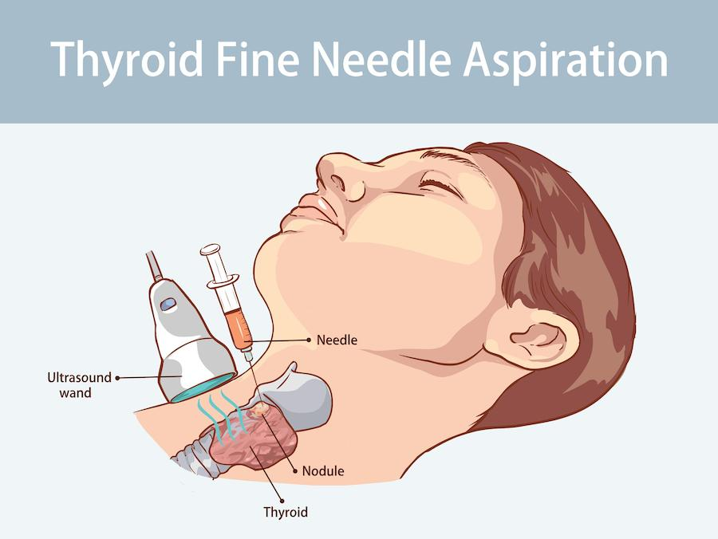

A thyroid fine needle aspiration, also called a thyroid FNA biopsy, is a simple test used to check a lump or nodule in your thyroid gland. The thyroid is a small, butterfly-shaped gland in your neck that makes thyroid hormones. It helps control your body’s energy, temperature, and metabolism.
This procedure helps your care team find out if the lump:
Is non-cancerous, or benign
Is cancerous, or malignant
Needs more testing
The test uses a thin needle to remove a small sample of tissue from the thyroid nodule. Your care team then sends the sample to a lab for testing.

A thyroid FNA biopsy is a safe procedure. Most people have no problems. However, as with any procedure, there are a few small risks:
Mild pain, swelling, or bruising at the biopsy site
Bleeding at the site
Rarely, infection
Severe problems after a thyroid FNA biopsy do not happen often, but your care team will watch for any signs.
Your care team will review your health history and any medicines you take.
You may be asked to stop blood-thinning medicine, like aspirin or warfarin, for a few days.
Wear comfortable clothing and a shirt that opens at the neck. You should remove any jewelry around your neck.
You usually do not need to stop eating or drinking before this test.
As with any procedure, you will need to sign a consent form.
The test is often done in a clinic or outpatient center.
You lie on your back with your neck slightly stretched.
The care team will apply some antiseptic and perhaps ultrasound gel to your neck. You may also receive a local anesthetic so you do not feel any pain.
The care team may use an ultrasound, a safe sound wave picture, to find the right spot in the thyroid.
You will need to stay still and not cough or swallow during the procedure.
A small needle is used to take the sample. Usually, 2 to 5 samples are collected. If the nodule contains fluid, a syringe may be used to drain the nodule.
You may feel a quick sting or pressure.
The whole test takes about 20 to 30 minutes.
You will stay awake the whole time. There are no cuts or stitches.
Most people go home right after.
Pressure may be applied to the biopsy site for a few minutes. You may have a small bandage on your neck.
You might feel sore or see a little bruise. This should go away in a few days. You could use an ice compress to ease discomfort. Another option is acetaminophen, brand name Tylenol®. Tell your care team first if you take blood thinners, have a history of bleeding or stomach ulcers, or have a history of kidney or liver disease.
Avoid heavy lifting or hard exercise for 1 day.
You can eat and drink normally unless told otherwise.
Most people return to regular activities within 24 hours.
It is normal to feel nervous about a biopsy. You may worry about pain or what the results will show. Please know that your care team is here to help you every step of the way. You are not alone. Many people have thyroid nodules, and most are not cancerous.
We want you to feel safe, supported, and informed.
How long will it take to get my results?
Will I need more tests or treatment after this?
What should I do if I feel pain after the biopsy?
Can I go back to work or drive the same day?
Contact your care team with any questions or concerns. We want you to feel comfortable with your health decisions.
Call your care team if you have:
Fever of 100.4°F or 38°C or higher, or chills
Redness, warmth, swelling, or increased pain at the biopsy site that does not get better or gets worse
Drainage or pus coming from the site
Bruising or a lump at the site that gets bigger or is very painful
Change in your voice, such as hoarseness or trouble speaking
Mild to moderate trouble swallowing that does not go away
Any questions or concerns about your symptoms or recovery
Get help right away if you have:
Severe trouble breathing or shortness of breath
Sudden swelling in your neck that is getting bigger quickly
Severe pain in your neck that does not get better with medicine
Severe or uncontrolled bleeding from the biopsy site
Trouble swallowing that gets worse or makes it hard to eat or drink
Confusion, severe weakness, or fainting
Thank you for trusting us with your care. We are here to support you and want you to feel your best. Contact us with any questions.
IF YOU HAVE A MEDICAL EMERGENCY, CALL 911 OR GO TO THE EMERGENCY ROOM.
The information presented is intended for general information and educational purposes. It is not intended to replace the advice of your health care provider. Contact your health care provider if you believe you have a health problem.
Last updated May 2025
© 2025 Mytonomy, Inc. All rights reserved.